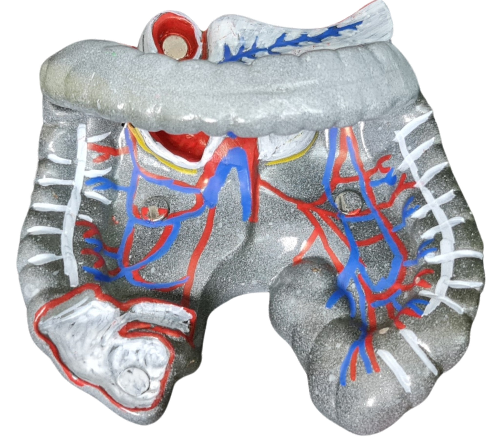

Cấu tạo
- Ruột già là phần áp cuối trong hệ tiêu hóa, dài khoảng 1,4 đến 1,8m.
- Chia làm 3 phần: manh tràng, kết tràng và trực tràng.
Chức năng:
- Hấp thụ nước trong dịch thức ăn được chuyển xuống từ ruột non và một số ion cần thiết cho cơ thể
- Hình thành phân và thải phân nhờ sự co bóp phối hợp của các cơ ở hậu môn và thành bụng.